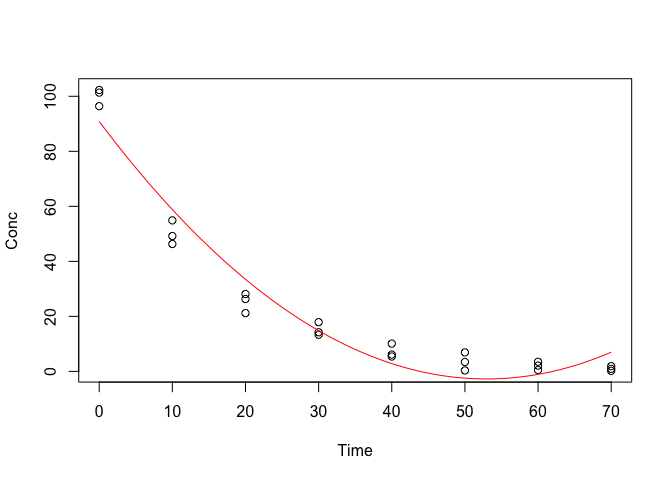
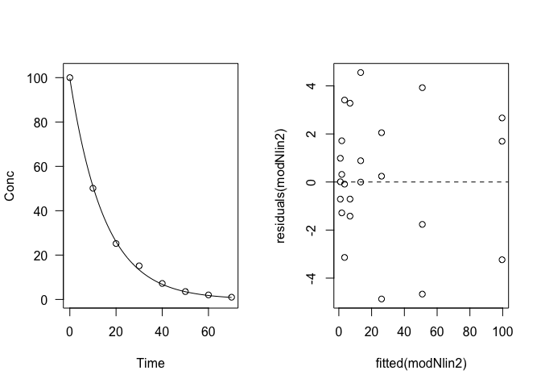

Capitolo 12 La regressione lineare semplice
12.1 Introduzione
Nella sperimentazione agronomica e biologica in genere è normale organizzare prove sperimentali replicate, anche per studiare l’effetto di una fattore quantitativo su una variabile dipendente, anch’essa quantitativa.
In questa situazione, l’impiego di metodiche di confronto multiplo, se non del tutto errato, è comunque da considerare ‘improprio’. Infatti, l’inclusione di alcuni particolari livelli della variabile indipendente è frutto solo delle esigenze organizzative, senza alcune interesse particolare per lo sperimentatore, che è invece interessato a capire come cresce/decresce/varia la Y (variabile dipendente) in funzione della X (variabile indipendente). In sostanza lo sperimentatore è interessato a definire una funzione di risposta per tutto il range delle X, non a confrontare le risposte a due particolari livelli di X.
12.2 Esempio
Per meglio comprendere la componente stocastica degli esperimenti, immaginiamo di conoscere la legge deterministica che definisce la risposta del frumento alla concimazione azotata. In particolare, immaginiamo che questa risposta produttiva sia fondamentalmente lineare:
\[Y_E = b_0 + b_1 X\]
ed immaginiamo che, senza concimazione (X = 0), la produzione sia pari a 25 q/ha (\(b_0\) = 25). Immaginiamo che l’incremente produttivo per kg di azoto somministrato sia pari a 0.15 q/ha (\(b_1\) = 0.15).
Per individuare questa legge naturale organizziamo un esperimento, con quattro dosi di azoto e quattro repliche. In questo esperimento, come in tutti gli esperimenti, agirà anche una componente stocastica, che in qualche modo sposterà la risposta osservata dalla risposta attesa:
\[Y_o = b_0 + b_1 X + \varepsilon \quad \textrm{con} \quad \varepsilon \sim N(0, \sigma)\]
Si assume che la componente stocastica \(\varepsilon\) sia distribuita normalmente, come media 0 e deviazione standard \(\sigma\), che immaginiamo essere pari a 2.5 q/ha.
Su questa base, generiamo i dati osservati.
set.seed(1234)
Dose <- rep(c(0, 60, 120, 180), each=4)
Yield_E <- 25 + 0.15 * Dose
epsilon <- rnorm(16, 0, 2.5)
Yield <- Yield_E + epsilonA questo punto scordiamoci la verità ‘vera’, che non è normalmente nota, e iniziamo l’analisi dei risultati dell’esperimento. Trattandosi di una prova replicata, si inizia, come al solito, con l’ANOVA, che porta al seguente risultato:
model <- lm(Yield ~ factor(Dose))
anova(model)
## Analysis of Variance Table
##
## Response: Yield
## Df Sum Sq Mean Sq F value Pr(>F)
## factor(Dose) 3 1725.98 575.33 112.75 4.672e-09 ***
## Residuals 12 61.23 5.10
## ---
## Signif. codes: 0 '***' 0.001 '**' 0.01 '*' 0.05 '.' 0.1 ' ' 1Osserviamo che l’effetto del trattamento è significativo e il SEM è pari a \(\sqrt{5.10/4} = 1.129\). Prima di proseguire, verifichiamo che non ci siano problemi relativi alle assunzioni parametriche di base e che, quindi, la trasformazione dei dati non sia necessaria. Il grafico dei residui, riportato di seguito, mostra che non vi sono patologie rilevanti.
par(mfrow=c(2,2))
plot(model)
Per maggior sicurezza, possiamo anche eseguire test statistici di verifica dell’omogeneità delle varianze (test di Bartlett e test di Levene) o della normalità dei residui (test di Shapiro-Wilks)
bartlett.test(Yield ~ factor(Dose))
##
## Bartlett test of homogeneity of variances
##
## data: Yield by factor(Dose)
## Bartlett's K-squared = 7.4135, df = 3, p-value = 0.05982
car::leveneTest(Yield ~ factor(Dose))
## Levene's Test for Homogeneity of Variance (center = median)
## Df F value Pr(>F)
## group 3 5.5069 0.013 *
## 12
## ---
## Signif. codes: 0 '***' 0.001 '**' 0.01 '*' 0.05 '.' 0.1 ' ' 1
shapiro.test(residuals(model))
##
## Shapiro-Wilk normality test
##
## data: residuals(model)
## W = 0.9844, p-value = 0.9889Ovviamente, nessuno di questi strumenti diagnostici rileva problemi con le assunzioni di base. In questo caso è ovvio, perché abbiamo generato noi i dati sotto queste assunzioni. Normalmente questo è invece un passaggio fondamentale.
Da questo momento in avanti, l’analisi non prosegue con un test di confronto multiplo (infatti quale senso avrebbe confrontare tra loro le risposte a N0, N60, N120 e così via?), ma con una analisi di regressione.
12.3 Stima dei parametri
Dobbiamo a questo punto individuare i parametri \(b_0\) e \(b_1\) in modo tale che la retta ottenuta sia la più vicina ai dati, cioè in modo da minimizzare gli scostamenti tra i valori di produzione osservati e quelli stimati dal modello (soluzione dei minimi quadrati). La funzione dei minimi quadrati è:
\[\begin{array}{l} Q = \sum\limits_{i = }^N {\left( {{Y_i} - \hat Y} \right)^2 = \sum\limits_{i = }^N {{{\left( {{Y_i} - {b_0} - {b_1}{X_i}} \right)}^2}} = } \\ = \sum\limits_{i = }^N {\left( {Y_i^2 + b_0^2 + b_1^2X_i^2 - 2{Y_i}{b_0} - 2{Y_i}{b_1}{X_i} + 2{b_0}{b_1}{X_i}} \right)} = \\ = \sum\limits_{i = }^N {Y_i^2 + Nb_0^2 + b_1^2\sum\limits_{i = }^N {X_i^2 - 2{b_0}\sum\limits_{i = }^N {Y_i^2 - 2{b_1}\sum\limits_{i = }^N {{X_i}{Y_i} + } } } } 2{b_0}{b_1}\sum\limits_{i = }^N {{X_i}} \end{array}\]
Calcolando le derivate parziali rispetto a \(b_0\) e \(b_1\) che, al momento, sono le nostre incognite, ed eguagliandole a 0 si ottengono le seguenti formule risolutive:
\[{b_1} = \frac{{\sum\limits_{i = 1}^N {\left[ {\left( {{X_i} - {\mu _X}} \right)\left( {{Y_i} - {\mu _Y}} \right)} \right]} }}{{\sum\limits_{i = 1}^N {{{\left( {{X_i} - {\mu _X}} \right)}^2}} }}\]
e
\[{b_0} = {\mu _Y} - {b_1}{\mu _X}\]
Invece che svolgere i calcoli a mano, possiamo eseguire il fitting ai minimi quadrati con R.
modelReg <- lm(Yield ~ Dose)
summary(modelReg)
##
## Call:
## lm(formula = Yield ~ Dose)
##
## Residuals:
## Min 1Q Median 3Q Max
## -4.6589 -1.5353 -0.4614 1.9275 3.9165
##
## Coefficients:
## Estimate Std. Error t value Pr(>|t|)
## (Intercept) 23.794630 0.937967 25.37 4.19e-13 ***
## Dose 0.154418 0.008356 18.48 3.13e-11 ***
## ---
## Signif. codes: 0 '***' 0.001 '**' 0.01 '*' 0.05 '.' 0.1 ' ' 1
##
## Residual standard error: 2.242 on 14 degrees of freedom
## Multiple R-squared: 0.9606, Adjusted R-squared: 0.9578
## F-statistic: 341.5 on 1 and 14 DF, p-value: 3.132e-11Vediamo che le stime ottenute, correlate dei loro errori standard, corrispondono bene con la verità ‘vera’ che avevamo costruito.
12.4 Valutazione della bontà del modello
12.4.1 Valutazione grafica
Abbiamo già valutato la validità delle assunzioni di base per i modelli lineari, in sede di ANOVA. Ora è necessario valutare se i dati osservati sono funzione della variabile esplicativa attraverso il modello dato più l’eventuale errore casuale, senza nessuna componente sistematica di mancanza d’adattamento. Questo può essere fatto, nel modo più semplice, attraverso un grafico dei valori attesi e dei valori osservati, come quello sottostante.
plot(Yield ~ Dose)
abline(modelReg, lty=2)
12.4.2 Errori standard dei parametri
In secondo luogo, possiamo valutare gli errori standard delle stime dei parametri, che non debbono mai essere superiori alla metà del valore del parametro stimato, cosa che in questo caso è pienamente verificata. Se così non fosse, l’intervallo di confidenza del parametro conterrebbe lo zero, il che equivarebbe a dire che, ad esempio, la pendenza ‘vera’ (cioè quella della popolazione) potrebbe essere nulla. In altre parole, la retta potrebbe quindi essere ‘piatta’, dimostrando l’inesistenza di relazione tra la X e la Y.
12.4.3 Test F per la mancanza d’adattamento
In terzo luogo, possiamo analizzare i residui della regressione, cioè gli scostamenti dei punti rispetto alla retta e, in particolare, la somma dei loro quadrati. Possiamo vedere che questo valore è pari a 70.38:
anova(modelReg)
## Analysis of Variance Table
##
## Response: Yield
## Df Sum Sq Mean Sq F value Pr(>F)
## Dose 1 1716.83 1716.83 341.5 3.132e-11 ***
## Residuals 14 70.38 5.03
## ---
## Signif. codes: 0 '***' 0.001 '**' 0.01 '*' 0.05 '.' 0.1 ' ' 1Possiamo notare che l’errore della regressione è più alto di quello dell’analisi della varianza, dato che il residuo dell’ANOVA contiene solo la misura dello scostamento di ogni dato rispetto alla media del suo gruppo, che si può considerare ‘errore puro’, mentre il residuo della regressione, oltre all’errore puro, contiene anche una componente detta ‘mancanza d’adattamento’ (lack of fit), misurabile con lo scostamento di ogni media dalla linea di regressione. In effetti, la regressione lineare è solo un’approssimazione della reale relazione biologica tra la concimazione e la produzione del frumento.
La devianza dovuta a mancanza d’adattamento puà essere quantificata per differenza:
\[\textrm{Lack of fit} = 70.38 - 61.23 = 9.153\]
Se consideriamo i gradi di libertà, la devianza totale ne ha 15 (numero dei dati - 1), la devianza del residuo della regressione ne ha 14 (penultima riga a destra nell’output di REGR.LIN, pari al numero dei dati - il numero dei parametri stimati), l’errore sperimentale puro ne ha 12 (vedi l’ANOVA), il lack of fit ne ha quindi 14 - 12 = 2. Possiamo testare la significanza del lack of fit, utilizzando un test di F: se questo è significativo allora la componente di mancanza d’adattamento non è trascurabile, ed il modello di regressione dovrebbe essere rifiutato. L’espressione è:
\[ F_{lack} = \frac{\frac{RSS_r - RSS_a}{DF_r-DF_a} } {\frac{RSS_a}{DF_a}} = \frac{MS_{lack}}{MSE_a}\]
In R, cioò equivale a confrontare i due modelli: ANOVA e regressione, con la funzione anova().
anova(modelReg, model)
## Analysis of Variance Table
##
## Model 1: Yield ~ Dose
## Model 2: Yield ~ factor(Dose)
## Res.Df RSS Df Sum of Sq F Pr(>F)
## 1 14 70.383
## 2 12 61.230 2 9.1531 0.8969 0.4335Vediamo che il test di F non è significativo. Ciò supporta l’idea che non vi sia mancanza d’adattamento e quindi la regressione fornisca una descrizione adeguata dei dati sperimentali.
12.4.4 Test F per la bontà di adattamento e coefficiente di determinazione
Possiamo considerare la varianza spiegata dalla regressione, che può essere confrontata con l’errore puro (appunto dato dalla varianza del residuo dell’ANOVA) tramite test F:
F <- anova(modelReg)[1,3]/anova(model)[2,3]
df(F, 1, 12)
## [1] 6.591661e-12Vediamo che in questo caso l’ipotesi nulla deve essere rifiutata: la varianza spiegata dalla regressione è significativamente maggiore di quella del residuo.
Più frequentemente, la devianza spiegata dalla regressione viene rapportata alla devianza totale, per individuare quanta parte della variabilità dei dati è spiegata dal modello prescelto. Questa proporzione definisce il cosidetto coefficente di determinazione o \(R^2\). La devianza totale, in questo caso è:
var(Yield)*15
## [1] 1787.211\[R^2 = \frac{SS_{reg}}{SS_{tot}} = \frac{1716.83}{1787.21} = 0.961\]
Questa statistica varia da 0 ad 1 e la regressione è tanto migliore quanto più essa si avvicina ad 1. In realtà il coefficiente di determinazione è visibile nell’output della funzione summary() applicata all’oggetto modelReg (vedi più sopra).
12.5 Previsioni
Dato che il modello ha mostrato di funzionare bene, con prudenza possiamo utilizzarlo per prevedere le produzioni a dosi intermedie, che non sono state incluse in prova. Ovviamente ci si deve mantenere entro il valore massimo e quello minimo inclusi in prova. In R, ciò è possibile utilizzando la funzione predict().
pred <- predict(modelReg, newdata=data.frame(Dose=80), se=T)
pred
## $fit
## 1
## 36.14805
##
## $se.fit
## [1] 0.5667367
##
## $df
## [1] 14
##
## $residual.scale
## [1] 2.242171E’anche possibile effettuare la previsione inversa, cioè chiedere ai dati qual è la dose a cui corrisponde una produzione di 45 q/ha. In questo caso dobbiamo tener presente che l’equazione inversa è:
\[X = \frac{Y - B_0}{b_1}\]
Per calcolare il risultato possiamo utilizzare la funzione deltaMethod(), nel package car, che ci calcola anche gli errori standard con il metodo della propagazione degli errori:
car::deltaMethod(modelReg, "(45 - b0)/b1",
parameterNames=c("b0", "b1"))
## Estimate SE 2.5 % 97.5 %
## (45 - b0)/b1 137.3247 4.442456 128.6176 146.0317